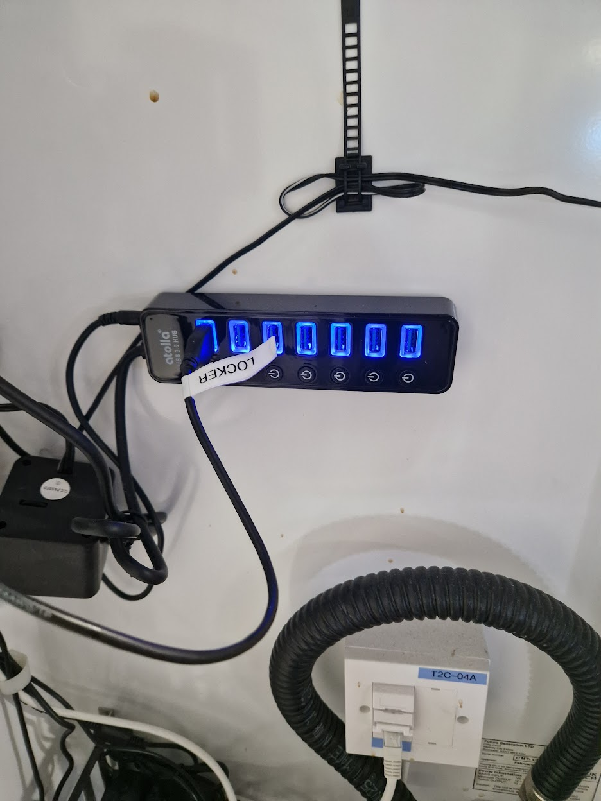

Connect to the lockers
Take the lockers out of service. Close the parkIT app. Keep the locker USB cable connected.
Recovery steps
- Save the initial report. Reset the boards and check for replies again.
- If any board is still missing, power cycle the master board and check again.
